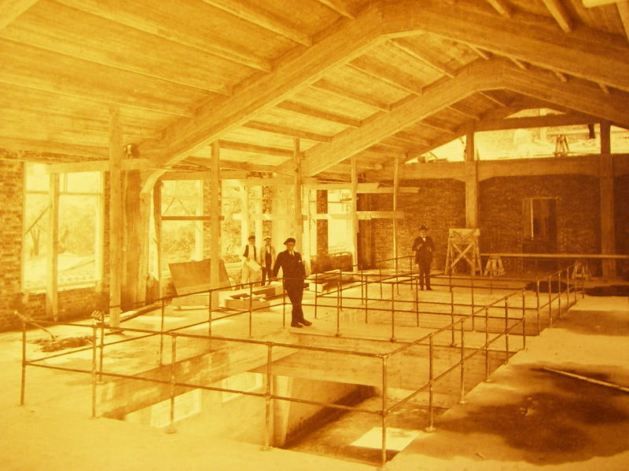
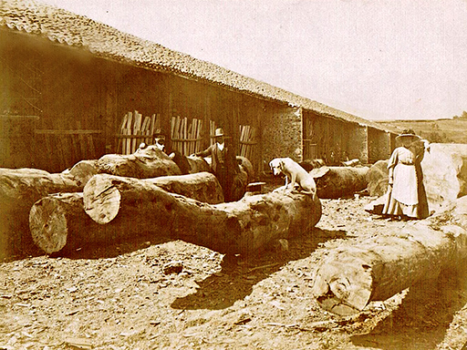
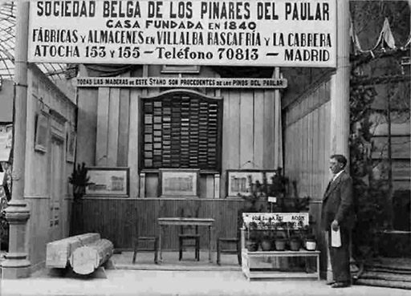
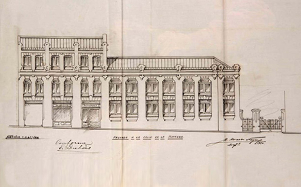
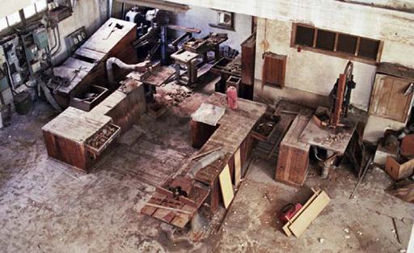
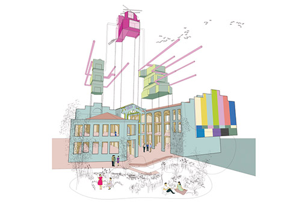

LA SERRERÍA BELGA

LA SERRERÍA BELGA
La Serrería Belga es un antiguo edificio industrial de Madrid, situado entre la calle de la Alameda, la calle Cenicero y la plaza de las Letras, en el barrio de las Letras. Era propiedad de la empresa Sociedad Belga de los Pinares de El Paular que lo construyó en 1925 según un proyecto del arquitecto Manuel Álvarez Naya, como sede para su compañía.
Su origen remonta a 1840, cuando la Sociedad Belga de Fincas Españolas, una compañía creada por un grupo de empresarios belgas, adquirió 2054 hectáreas en la sierra de Guadarrama. Iniciaron una explotación sostenible de los pinares, conocidos más adelante como Pinares de El Paular. Instalaron su sede en Madrid, en unos terrenos que habían pertenecido al antiguo convento de los Padres Agonizantes, en la calle de Atocha.


A partir de 1860, con la aprobación del Plan Castro de ensanche de Madrid, aumentó mucho la demanda de madera para vigas y carpintería de los edificios que se construían en los nuevos barrios, así como para labores de ebanistería. La construcción de la estación del Mediodía, futura estación de Atocha, muy cerca de la Serrería contribuyó también mucho al auge de sus negocios.
⇧ Volver arriba
EL EDIFICIO ORIGINAL
La Serrería Belga tuvo que ampliar sus instalaciones en varias ocasiones y en 1924 decidió remodelarlas por completo encargando el proyecto al arquitecto Manuel Álvarez Naya. El conjunto diseñado por Álvarez Naya se ha mantenido sin apenas modificaciones hasta la rehabilitación de 2009-2012.
Constaba de dos grandes naves paralelas, separadas por un patio abierto y conectadas por un porche en su fachada norte. Las fachadas son de estilo historicista con textos esgrafiados, mientras que el interior deja a la vista la estructura de hormigón armado, con pilares--- y grandes ventanales, que mejoraban las condiciones de trabajo y la seguridad en caso de incendio.
La nave con fachada a la calle Cenicero se dedicaba a almacén y secadero, y se abría al patio central sin cerramiento alguno, sólo una barandilla metálica en cada planta. Estas eran prácticamente diáfanas, con algunas pequeñas estancias.
El edificio con fachada a la calle Alameda albergaba los talleres de corte y elaboración. La planta baja constaba de un amplio espacio diáfano dedicado a taller, una sala para el encargado y una tienda con escaparate a la calle. La primera planta se dedicaba también a taller, un espacio diáfano que se comunicaba con la planta baja mediante dos amplias aperturas en el forjado, y que contaba con unas habitaciones menores que servían de almacén, sala de modelos y aseos. La segunda planta, de menor tamaño y que ocupaba sólo la parte norte del edificio, contenía espacios para dibujantes y tallistas, aseos y otras dependencias.

⇧ Volver arriba
EL DECLIVE
En los años 50, la empresa inició un declive que le obligaría a reducir su plantilla. El aumento de la población convirtió el centro de la ciudad en un denso núcleo urbano donde la escasez de suelo elevó mucho los precios. La venta de solares industriales se convierte así en una atractiva operación económica. En un intento de diversificar su actividad, la Sociedad Belga de los Pinares del Paular, construye en 1954 el hotel Mercator en la parte del solar que tocaba con la calle Atocha.
A finales de los años 1970, se cierra la nave de la calle Alameda y se mantiene una actividad reducida a almacén y taller de molduras en la nave de la calle Cenicero, que terminarán por cerrar en los años 1990.
La empresa vende en el año 2000 el hotel, un solar y un edificio adyacentes a una empresa privada que construirá el hotel Paseo del Arte, y el conjunto de la serrería al Ayuntamiento de Madrid.

⇧ Volver arriba
LA REHABILITACIÓN
En 2007, los arquitectos María Langarita Sánchez y Víctor Navarro Ríos ganaron el concurso de rehabilitación y remodelación de los edificios cuyas obras se realizaron entre 2009 y 2012. Las nuevas instalaciones se inauguraron en 2013, y albergan desde esa fecha Medialab-Prado.

⇧ Volver arriba